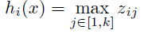
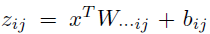
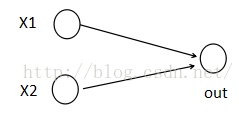
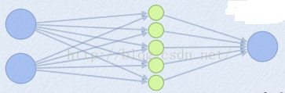
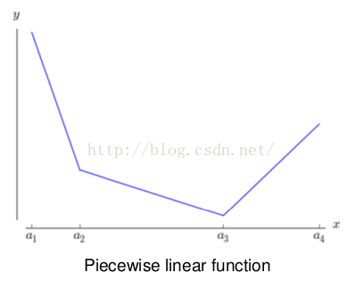
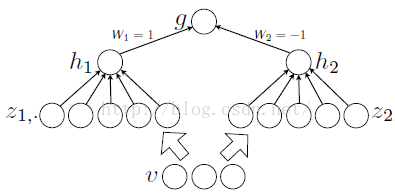
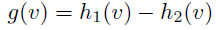

目录视图
目录视图 摘要视图
摘要视图 订阅
订阅版权声明：本文为博主原创文章，欢迎转载，转载请注明原文地址、作者信息。
Maxout网络学习
原文地址：http://blog.csdn.net/hjimce/article/details/50414467
作者：hjimce
一、相关理论
本篇博文主要讲解2013年，ICML上的一篇文献：《Maxout Networks》，这个算法我目前也很少用到，个人感觉最主要的原因应该是这个算法参数个数会成k倍增加(k是maxout的一个参数)，不过没关系，对于我们来说知识积累才是最重要的，指不定某一天我们就需要用到这个算法，技多不压身。个人感觉Maxout网络和Dropout有很多相似的地方。
本篇博文将从什么是maxout网络讲起，先解答maxout的源码层实现，因为很多人最感兴趣的还是算法要怎么实现，当然我也是这样的。我看文献，一般最在意的还是源码的实现，有的文献理论公式推导了十几页，结果5行代码搞定，我看到想哭，这也许就是我讨厌做学术研究的原因吧。知道了源码怎么实现后，我们简单啰嗦一下maxout相关的理论意义。
二、Maxout算法流程
1、算法概述
开始前我们先讲解什么叫maxout networks，等我们明白了什么叫maxout 网络后，再对maxout的相理论意义做出解释。Maxout是深度学习网络中的一层网络，就像池化层、卷积层一样等，我们可以把maxout 看成是网络的激活函数层，这个后面再讲解，本部分我们要先知道什么是maxout。我们假设网络某一层的输入特征向量为：X=（x1,x2,……xd），也就是我们输入是d个神经元。Maxout隐藏层每个神经元的计算公式如下：

上面的公式就是maxout隐藏层神经元i的计算公式。其中，k就是maxout层所需要的参数了，由我们人为设定大小。就像dropout一样，也有自己的参数p(每个神经元dropout概率)，maxout的参数是k。公式中Z的计算公式为：

权重w是一个大小为(d,m,k)三维矩阵，b是一个大小为(m,k)的二维矩阵，这两个就是我们需要学习的参数。如果我们设定参数k=1，那么这个时候，网络就类似于以前我们所学普通的MLP网络。
我们可以这么理解，本来传统的MLP算法在第i层到第i+1层，参数只有一组，然而现在我们不怎么干了，我们在这一层同时训练n组参数，然后选择激活值最大的作为下一层神经元的激活值。下面还是用一个例子进行讲解，比较容易搞懂。
为了简单起见，假设我们网络第i层有2个神经元x1、x2，第i+1层的神经元个数为1个，如下图所示：

(1)以前MLP的方法。我们要计算第i+1层，那个神经元的激活值的时候，传统的MLP计算公式就是：
z=W*X+b
out=f(z)
其中f就是我们所谓的激活函数，比如Sigmod、Relu、Tanh等。
(2)Maxout 的方法。如果我们设置maxout的参数k=5，maxout层就如下所示：

相当于在每个输出神经元前面又多了一层。这一层有5个神经元，此时maxout网络的输出计算公式为：
z1=w1*x+b1
z2=w2*x+b2
z3=w3*x+b3
z4=w4*x+b4
z5=w5*x+b5
out=max(z1,z2,z3,z4,z5)
所以这就是为什么采用maxout的时候，参数个数成k倍增加的原因。本来我们只需要一组参数就够了，采用maxout后，就需要有k组参数。
三、源码实现
ok，为了学习maxout源码的实现过程，我这边引用keras的源码maxout的实现，进行讲解。keras的网站为：http://keras.io/ 。项目源码网站为：https://github.com/fchollet/keras。下面是keras关于maxout网络层的实现函数：
- #maxout 网络层类的定义
- class MaxoutDense(Layer):
- # 网络输入数据矩阵大小为(nb_samples, input_dim)
- # 网络输出数据矩阵大小为(nb_samples, output_dim)
- input_ndim = 2
- #nb_feature就是我们前面说的k的个数了，这个是maxout层特有的参数
- def __init__(self, output_dim, nb_feature=4,
- init='glorot_uniform', weights=None,
- W_regularizer=None, b_regularizer=None, activity_regularizer=None,
- W_constraint=None, b_constraint=None, input_dim=None, **kwargs):
- self.output_dim = output_dim
- self.nb_feature = nb_feature
- self.init = initializations.get(init)
- self.W_regularizer = regularizers.get(W_regularizer)
- self.b_regularizer = regularizers.get(b_regularizer)
- self.activity_regularizer = regularizers.get(activity_regularizer)
- self.W_constraint = constraints.get(W_constraint)
- self.b_constraint = constraints.get(b_constraint)
- self.constraints = [self.W_constraint, self.b_constraint]
- self.initial_weights = weights
- self.input_dim = input_dim
- if self.input_dim:
- kwargs['input_shape'] = (self.input_dim,)
- self.input = K.placeholder(ndim=2)
- super(MaxoutDense, self).__init__(**kwargs)
- #参数初始化部分
- def build(self):
- input_dim = self.input_shape[1]
- self.W = self.init((self.nb_feature, input_dim, self.output_dim))#nb_feature是我们上面说的k。
- self.b = K.zeros((self.nb_feature, self.output_dim))
- self.params = [self.W, self.b]
- self.regularizers = []
- if self.W_regularizer:
- self.W_regularizer.set_param(self.W)
- self.regularizers.append(self.W_regularizer)
- if self.b_regularizer:
- self.b_regularizer.set_param(self.b)
- self.regularizers.append(self.b_regularizer)
- if self.activity_regularizer:
- self.activity_regularizer.set_layer(self)
- self.regularizers.append(self.activity_regularizer)
- if self.initial_weights is not None:
- self.set_weights(self.initial_weights)
- del self.initial_weights
- def get_output(self, train=False):
- X = self.get_input(train)#需要切记这个x的大小是(nsamples,input_num)
- # -- don't need activation since it's just linear.
- output = K.max(K.dot(X, self.W) + self.b, axis=1)#maxout激活函数
- return output

- output = K.max(K.dot(X, self.W) + self.b, axis=1)#maxout激活函数

下面在简单啰嗦一下相关的理论，毕竟文献的作者写了那么多页，我们总得看一看才行。Maxout可以看成是一个激活函数 ，然而它与原来我们以前所学的激活函数又有所不同。传统的激活函数：
比如阈值函数、S函数等。maxout激活函数，它具有如下性质：
1、maxout激活函数并不是一个固定的函数，不像Sigmod、Relu、Tanh等函数，是一个固定的函数方程
2、它是一个可学习的激活函数，因为我们W参数是学习变化的。
3、它是一个分段线性函数：

然而任何一个凸函数，都可以由线性分段函数进行逼近近似。其实我们可以把以前所学到的激活函数：relu、abs激活函数，看成是分成两段的线性函数，如下示意图所示：
maxout是一个函数逼近器，对于一个标准的MLP网络来说，如果隐藏层的神经元足够多，那么理论上我们是可以逼近任意的函数的。类似的，对于maxout 网络也是一个函数逼近器。
定理1：对于任意的一个连续分段线性函数g(v)，我们可以找到两个凸的分段线性函数h1(v)、h2(v)，使得这两个凸函数的差值为g(v)：


参考文献：
1、《Maxout Networks》
2、http://www.cnblogs.com/tornadomeet/p/3428843.html
**********************作者：hjimce 时间：2015.12.20 联系QQ：1393852684 原创文章，转载请保留原文地址、作者等信息***************
- 顶
- 0
- 踩
- 0
我的同类文章
- •深度学习（四十一）cuda8.0+ubuntu16.04+theano、caffe、tensorflow环境搭建2016-07-22
- •深度学习（四十）caffe使用点滴记录2016-07-11
- •深度学习（三十八）卷积神经网络入门学习(2.0)2016-06-26
- •深度学习（四十二）word2vec词向量学习笔记2016-06-02
- •深度学习（三十六）异构计算CUDA学习笔记（1）2016-05-26
- •深度学习（三十八）初识DL在自然语言序列标注中的应用-未完待续2016-05-01
- •tensorflow学习使用路线2016-07-13
- •深度学习（四十）优化求解系列（2）简单理解神经网络求解过程-未完待续2016-06-26
- •深度学习（三十七）优化求解系列之(1)简单理解梯度下降2016-06-05
- •深度学习（四十二）网络压缩-未完待续2016-06-02
- •深度学习（三十五）异构计算GLSL学习笔记（1）2016-05-22
参考知识库

- 猜你在找


暂无评论